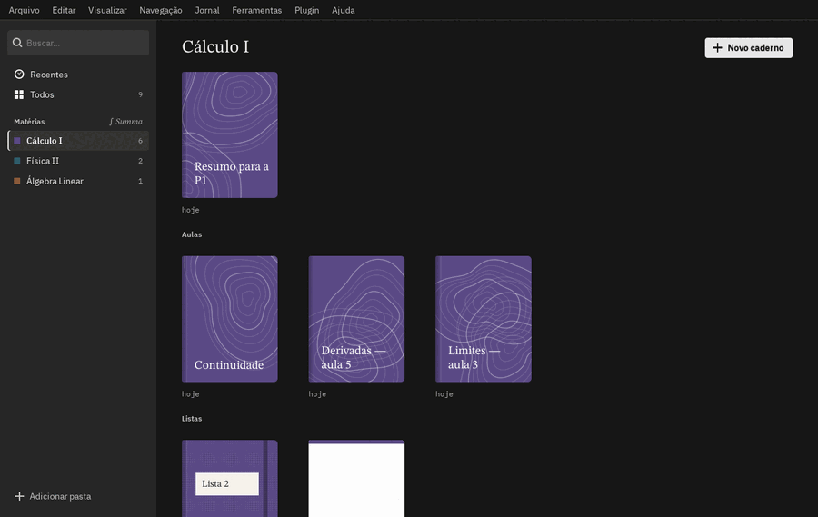
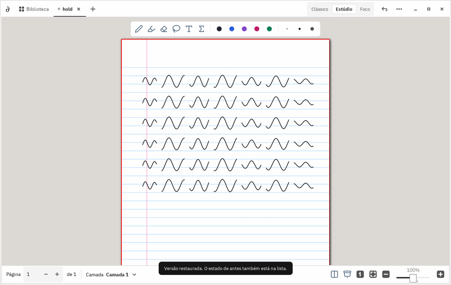
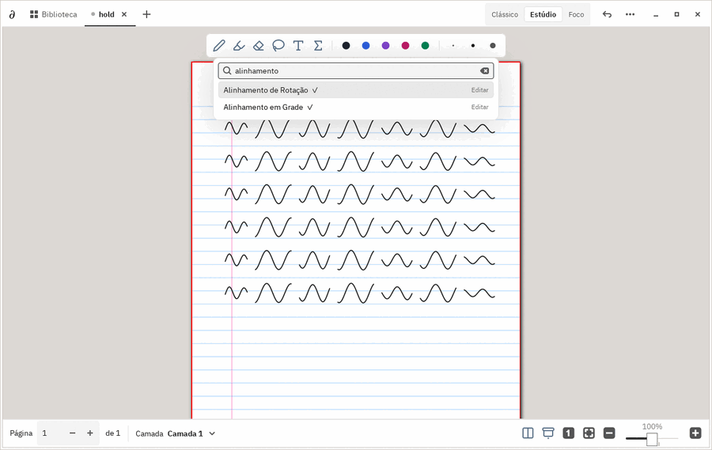
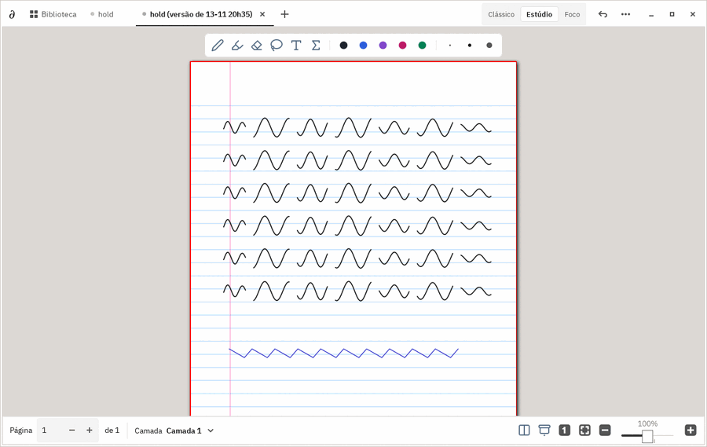
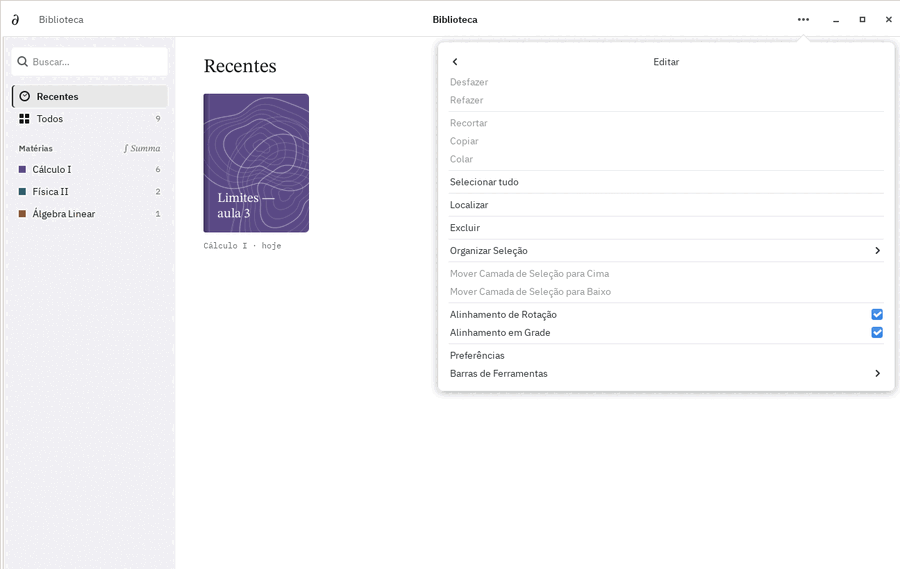

Movimento, tema escuro e o resto
Protótipo r6. Com ele termina o desenho da interface. A linguagem de movimento é a do Summa, copiada sem mudança e aplicada às peças do Ambitus. Depois vêm o tema escuro, os avisos, a caixa de comandos, as versões, o modo Foco, os menus e os diálogos que ainda estavam com a cara do Xournal++.
1. Movimento
A regra do Summa, no texto dele: “Movimento discreto: é um app de estudo. Entra rápido, sai mais rápido ainda, e nada anima o layout.” O Ambitus usa os mesmos valores.
| Token | Valor | Para quê |
|---|---|---|
--t-fast | 120 ms | resposta (passar o mouse, apertar), troca de conteúdo e toda saída |
--t-base | 180 ms | entrada: menu, popover, aviso, barra, diálogo |
--t-slow | 320 ms | mudança de quantidade e as microinterações (copiado, mandado) |
--ease-out | cubic-bezier(.22,.61,.36,1) | o que aparece ou some |
--ease-move | cubic-bezier(.4,0,.2,1) | o que já estava na tela e anda, gira ou enche |
| de onde parte | 3 px para baixo · 4 px para cima · 98,5% | o que abre para baixo · o que sobe ou chega de baixo · diálogo |
Só opacidade e deslocamento: tamanho e posição de painel nunca animam. “Reduzir movimento” tira os deslocamentos e deixa só um fade curto. Ligue os dois interruptores do topo para ver.
As peças do Ambitus
Onde cada coisa entra
| Peça | Movimento | Como sai no GTK3 |
|---|---|---|
| Menus (⋯, botão direito), opções da ferramenta, painel ⋯ | desce 3 px, 180 ms; sai em 120 ms | popover do GTK: já tem fade e deslize próprios, muito perto disso |
| Menu radial | cresce de 98,5%, 180 ms; sai em 120 ms | desenhado à mão: relógio de quadros do GTK com a mesma curva |
| Barra de seleção, avisos | sobe 4 px, 180 ms; sai em 120 ms | fade do GtkRevealer. O GTK3 não move widget por CSS, então nelas o deslocamento de 4 px fica de fora; em 180 ms a diferença quase não se vê |
| Diálogos dentro da janela (caderno novo, LaTeX, exportar) | cresce de 98,5%, 180 ms; véu em fade | cartão desenhado sobre a janela, com fade |
| Passar o mouse, apertar, interruptor | cor em 120 ms; a bolinha do interruptor anda em 180 ms | transition no CSS do GTK3, que aceita a mesma curva |
| Passos do setup, abas das Configurações | troca de conteúdo em fade, 120 ms | GtkStack com crossfade de 120 ms |
| Endireitar o traço, Mandar ao Summa | como nos exemplos acima | Cairo e CSS |
| Copiar (barra de seleção) | o ícone vira ✓ por 1,2 s, traço em 320 ms | o mesmo “Copiado” do Summa |
| Lendo a escrita, mandando | pulso em laço de 1,2 s | CSS do GTK3 (@keyframes) |
| Traço, página, zoom, rolagem, virar página, trocar de aba, abrir caderno, seleção, foco | nenhum | escrever tem de ser instantâneo, e animar a página piscaria a cada zoom (o Summa decidiu igual para o PDF) |
“Reduzir movimento” segue a opção do sistema (GNOME → Acessibilidade → Reduzir animação, que o GTK lê como gtk-enable-animations). As peças desenhadas à mão leem a mesma opção. Não há interruptor próprio no Ambitus: é um lugar a menos para procurar.
2. Tema escuro
Hoje o escuro só existe na biblioteca, que tem um preto puro (#000) com a barra de menus do Xournal++ por cima. A proposta usa os tokens escuros do Summa em tudo: fundo #161616, palco #262626 e bordas #393939. No escuro, o acento grafite vira claro: o botão principal fica claro com texto escuro.
- A folha continua branca. As cores da tinta ficam gravadas no
.xopp; inverter a página trocaria a cor que o Summa e o Xournal++ veem. Só a moldura escurece. - Na paleta, a bolinha de tinta preta ganha um anel claro, para não sumir no fundo.
- As capas mantêm a cor da matéria.

3. Avisos
Hoje o aviso já é uma tarja escura embaixo, perto do certo. A proposta copia os dois avisos do Summa: a tarja simples, que some sozinha em 4 s, e o cartão com ação, que tem botão e contagem, como o “Desfazer” do Summa. Os dois ficam centralizados embaixo da área da página, acima da barra de status.

Salvar sozinho não avisa nada: o ponto na aba some, e é só. Só pede atenção o que precisa de você ou o que deu errado. O erro é um cartão que fica até você fechar, e o detalhe técnico vai para “Copiar o detalhe”, não para o texto do aviso.
4. Caixa de comandos
Hoje o Ctrl+/ abre uma lista pequena colada na paleta, com o caminho do menu ao lado. A proposta é a paleta Ctrl+K do Summa: um véu leve sobre a janela, a caixa no alto e o resultado separado em seções. Ela também acha cadernos: digite o nome e abra direto. Assim, Ctrl+K e Ctrl+/ abrem a mesma caixa, e a tela final do setup passa a citar só uma das teclas.

↑ ↓ andam, Enter executa, Esc fecha. As opções liga/desliga mostram ✓. Sem nada digitado, aparecem os recentes. Tente “cálc”, “reta” ou “summa”.
5. Versões
Hoje, “Versões” abre a versão antiga numa aba nova, “hold (versão de 13-11 20h35)”, e fica difícil saber em qual aba você está. A proposta é um painel à direita, no mesmo caderno, com as versões agrupadas por dia. Clicar numa versão mostra ela no lugar da página, só para ler, com uma faixa no alto. “Restaurar esta” guarda a atual antes de trocar e oferece Desfazer.

6. Modo Foco
Hoje o Foco esconde tudo menos a página. O radial e os atalhos continuam valendo, mas para trocar a cor é preciso saber a tecla. A proposta é a paleta aparecer quando o ponteiro chega no alto: ela desce em 180 ms, como um menu, e some em 120 ms um segundo e meio depois de o ponteiro sair. O botão da caneta continua abrindo o radial em qualquer lugar.
7. Menus
Os dois menus que mais aparecem, no estilo dos menus do Summa: ícone Lucide, atalho em cinza à direita, separador fino, e o que apaga em vermelho por último. Hoje o ⋯ da barra é o menu cinza do GTK, com submenus que deslizam e “Organizar Seleção” desativado no meio.

O ⋯ da barra do topo
Fica o que não está em outro lugar. As ferramentas moram na paleta e as opções delas no toque duplo. O menu completo do Xournal++ continua no modo Clássico, para quem usa.
8. Diálogos
Os diálogos que você abre com frequência viram cartões dentro da janela, como o do caderno novo no r5, e não janelas separadas. Assim, não somem atrás da janela principal e herdam o tema. Os outros (abrir arquivo, imprimir) continuam sendo os do sistema.
Com isso, a interface está toda desenhada
Ordem de implementação, revista com o r6:
- Fundação: os tokens do Summa no
ambitus.css(cores claras e escuras, cantos, movimento), os ícones Lucide e o papel Summa. - Paleta: ⋯, opções ao tocar de novo, favoritas, e a personalização da paleta e do radial.
- Na página: barra de seleção, menu do botão direito, radial animado, endireitar animado.
- Avisos, caixa de comandos Ctrl+K, painel de versões, modo Foco.
- Caderno novo, tela de início, diálogos de LaTeX e PDF, textos.
- Configurações no estilo do Summa, setup de primeira vez, ⋯ da barra.
- Modo Clássico enxuto.
- No Summa: página como anexo, clipe no chat lateral, chat solto igual ao preso.